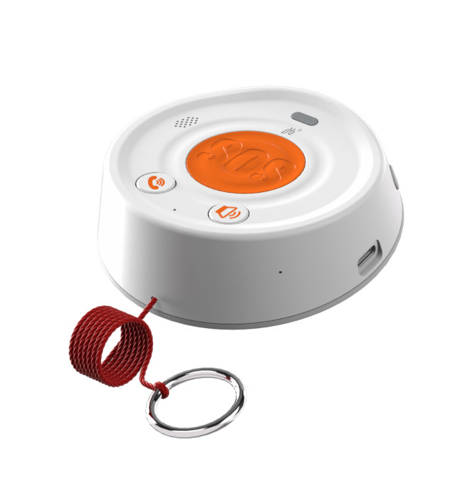

普通业主
报修、预约服务，家属代老人发布与下单。
以小区专兼职管家为入口，服务系统为抓手，联动社区、物业、志愿者、商户、技工，建设有温度、可追踪、可监管的小区综合服务平台。
五类主体不是各自独立运行，而是由小区管家统一受理、分类派单、过程监督、评价回访，最后沉淀为小区治理数据。
报修、预约服务，家属代老人发布与下单。
通过电话、4G智能主机、前台、上门探访联系管家，获得日常和紧急服务。
承接探访、助聊、代买、送餐等低风险服务，获得积分和荣誉。
提供助餐、代购、药品配送和生活物资保供服务。
承接维修、保洁、安装、适老化改造，形成稳定服务记录和信誉。
演示页内置五类典型场景，用于向领导说明“需求如何进入、谁来服务、过程如何监管、结果沉淀什么”。
居民通过小程序或管家热线提交维修需求，管家派单并跟踪结果。
这不是给群众增加一个入口，而是把热线、前台、小程序、4G智能主机、上门探访全部汇入管家工作台。
4G智能主机触发，疑似摔倒，家属暂未接听。
已派认证水电工，预计 18 分钟到达。
楼栋志愿者已接单，今日 16:30 上门。
餐饮商户已出餐，配送人员正在逐户确认。
按小区汇总红黄绿等级老人数量、老人服务状况、服务次数、志愿者力量和邻里互助单数，支撑街道、民政、物业和管家协同调度。
4G智能主机、管家热线、物业前台、定期上门探访和家属代发构成五个入口，重点解决数字鸿沟。

标 * 号部分功能可选配。
重点体现人文关怀，把志愿服务、助餐配送、生活物资、适老化维修和政府补贴纳入统一台账，让每一次帮助都被记录、被回访、被看见。
探访、助聊、代买、送餐等低风险服务进入志愿台账。
服务完成后发放积分，鼓励低龄老人、志愿者参与邻里互助，按季度与年度评优荣誉等。
红色、黄色老人形成探访频次、紧急联系人和服务记录。
服务过程、补贴使用、群众评价和回访结果统一留痕。
AI 不替代管家，而是帮助管家更快发现风险、更准匹配服务、更细监督过程。未来小区小程序把养老、互助、维修、助餐、探访和补贴记录汇聚成一个民生服务闭环。
综合独居、慢病、呼叫、设备告警、探访记录，辅助管家调整老人分级。
按距离、技能、权限、信誉分、空闲时间推荐志愿者、技工或便民商户。
识别超时未到、工牌未打卡、服务时长不足、重复投诉和异常记录。
根据兑换记录推荐米面油、纸巾、洗衣液、理发券、助洁券等商品。
老人发需求、管家派的出、服务接的住、让过程可追溯、政府看的到。
重点老人建立一人一档，关联责任人。
4G智能主机、热线、前台、探访、家属代发。
所有投诉工单必须管家回访和闭环。
按服务评价和抽样回访双重统计。